OCA 光学胶
洁净、排废、胶层控制与边缘品质
以高精密圆刀模和平刀模为两大产品主线，服务 OCA、铜箔、铝箔、胶粘材料、光学膜片、3C 电子、医疗与新能源等模切场景。
TWO PRODUCT SYSTEMS
圆刀面向高节拍连续生产与复杂特殊材料；平刀覆盖激光、蚀刻、雕刻及包装类模切需求。
MATERIAL EXPERTISE
不同材料的黏性、延展性、厚度与洁净要求不同，刀模设计必须从材料和量产节拍共同出发。
洁净、排废、胶层控制与边缘品质
薄材防拉伸、毛刺与变形控制
偏光、增光、扩散、反射与复合膜
不干胶、保护膜、泡棉与双面胶
高洁净、小孔位及复杂轮廓
电池与能源部件的批量模切
MANUFACTURING EQUIPMENT
以 CNC、激光、雕刻与 3D 打印技术构成制造基础，配套成型、测量和试切设备，将工艺要求落实到每一道工序。
01 / EQUIPMENT
三轴与四轴 CNC 配合车削、铣削和磨削设备，支持刀模与零部件的连续加工。
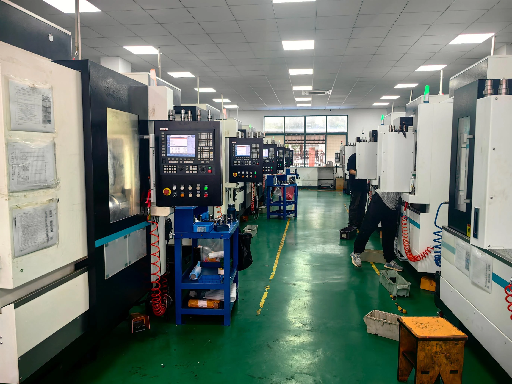
| 设备名称 | 品牌 | 规格 / 配置 | 数量 |
|---|---|---|---|
| 三轴 CNC | 盛方源 | 700 × 900 mm | 1 台 |
| 三轴 CNC | 盛方源 | 600 × 500 mm | 2 台 |
| 三轴 CNC | 佳铁 | 600 × 500 mm | 1 台 |
| 四轴 CNC | 佳铁 | 600 × 500 mm | 14 台 |
| 四轴 CNC | 广进 | 600 × 500 mm | 2 台 |
| 普通车床 | 沈阳机械 | 6150 | 1 台 |
| 数控车床 | 云南机械 | 6150 | 2 台 |
| 外圆磨床 | 上海机床 | M1332B | 1 台 |
| 磨床 | 凌云 | 500 × 250 mm | 2 台 |
| 铣床 | 松永 | — | 3 台 |
| 自动磨刀机 | 同亨 | — | 1 台 |
02 / EQUIPMENT
激光切割与精密雕刻完成刀板加工，弯刀、泡棉切割及开槽设备支持平刀模配套制作。
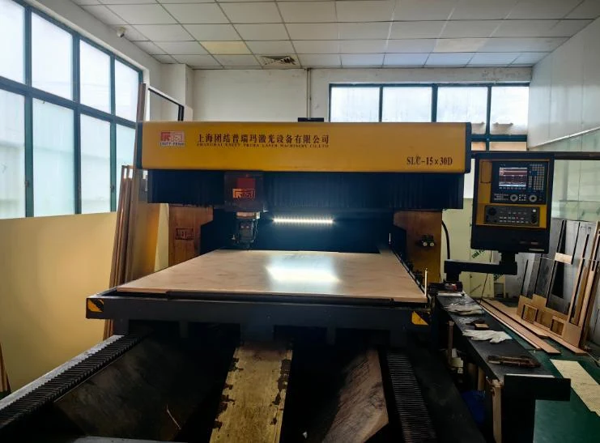
| 设备名称 | 品牌 | 规格 / 配置 | 数量 |
|---|---|---|---|
| 激光切割机 | 罗芬 | 3000 × 1500 mm | 1 台 |
| 雕刻机 | 科杰 | 700 × 900 mm | 2 台 |
| 雕刻机 | 优中 | 700 × 900 mm | 8 台 |
03 / EQUIPMENT
自主研发 3D 打印设备与圆刀模具加工工艺，将零件熔覆加工与后续精加工结合，支持圆刀制造。
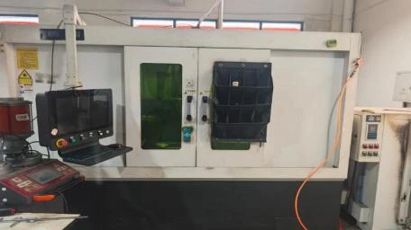
| 设备名称 | 品牌 | 规格 / 配置 | 数量 |
|---|---|---|---|
| 3D 打印设备 | 自主研发 | 零件熔覆加工 | 1 台 |
04 / EQUIPMENT
覆盖尺寸、轮廓、角度、表面及硬度检验，并通过圆刀试切和修刀确认模切表现。
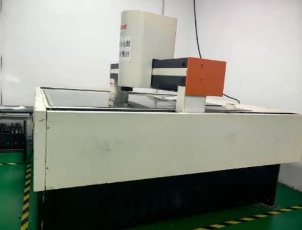
| 设备名称 | 品牌 | 规格 / 配置 | 数量 |
|---|---|---|---|
| 2.5 次元测量仪 | 三友 | 行程 1600 × 1300 mm | 1 台 |
| 千分尺 | 三丰 | 0–250 mm，10 档量程 | 10 把 |
| 游标卡尺 | 三丰 | 0–150 / 300 / 500 / 700 mm | 4 把 |
| 投影仪 | 万濠 | 60 倍 | 1 台 |
| 显微镜 | 桂光 | 40 倍 | 3 台 |
| 硬度计 | 聚敏 | 上下行程 200 mm | 1 台 |
0–25、25–50、50–75、75–100、100–125、125–150、150–175、175–200、200–225、225–250 mm，每档 1 把。
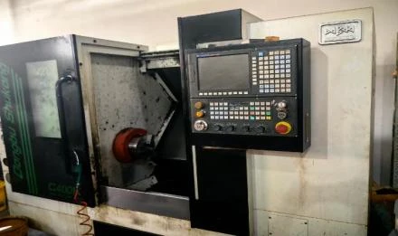
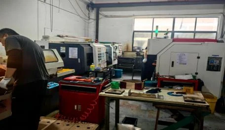
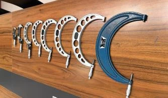
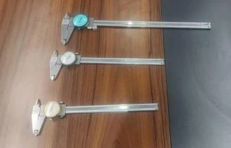
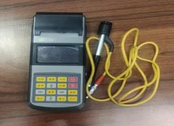
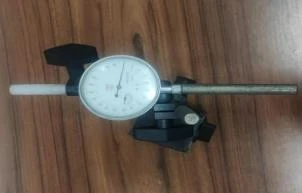
REAL WORKSHOP
走进 CNC、激光、弯刀、泡棉与雕刻加工现场，了解精密刀模的制造过程。
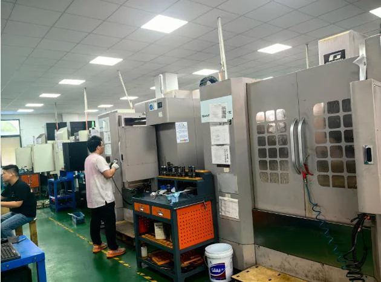
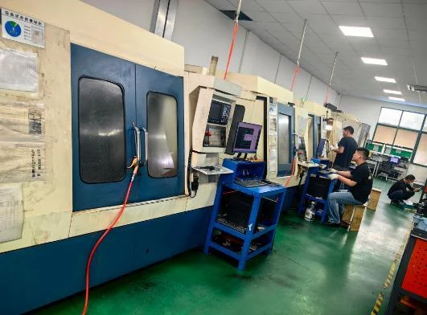
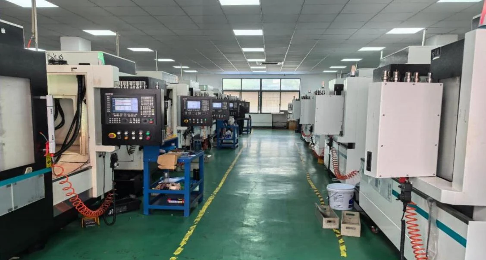
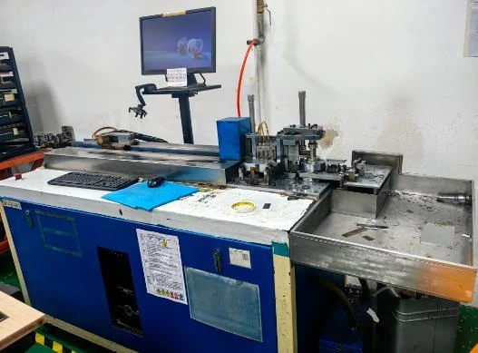
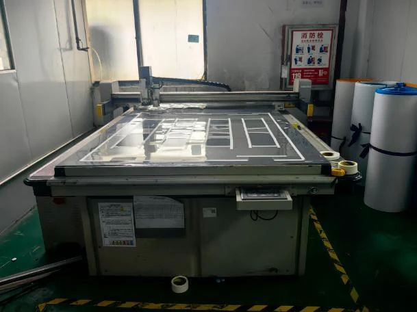
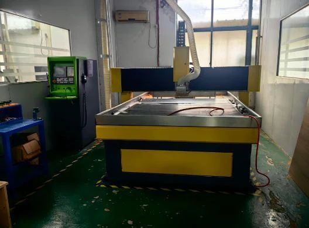
MANUFACTURING BASE
圆刀 CNC、激光切割、弯刀、雕刻、试切修刀与 2.5 次元检测共同构成质量闭环。

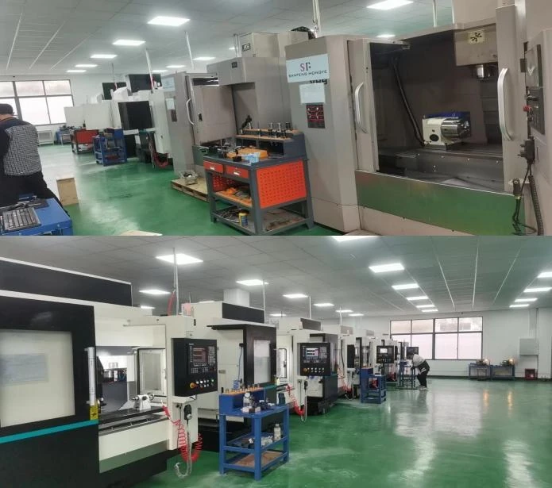

DIE-CUTTING PROJECT
请提供材料名称、厚度、产品图纸、设备规格、节拍及排废要求。